Лабораторная работа 3¶
РЕАЛИЗАЦИЯ СЕРВЕРНОЙ ЧАСТИ ПРИЛОЖЕНИЯ СРЕДСТВАМИ DJANGO И DJANGORESTFRAMEWORK¶
Цель: овладеть практическими навыками и умениями реализации web-сервисов средствами Django.
Практическое задание: Реализовать сайт, используя фреймворк Django 3, Django REST Framework, Djoser и СУБД PostgreSQL *, в соответствии с вариантом задания лабораторной работы.
Вариант: 9
Создать программную систему, предназначенную для диспетчера автобусного парка частной транспортной фирмы. Фима обслуживает несколько коммерческих маршрутов. Такая система должна обеспечивать хранение сведений о водителях, о маршрутах и характеристиках автобусов. Каждый водитель характеризуется паспортными данными, классом, стажем работы и окладом, причем оклад зависит от класса и стажа работы. Маршрут автобуса характеризуется номером маршрута, названием начального и конечного пункта движения, временем начала и конца движения, интервалом движения и протяженностью в минутах (время движения от кольца до кольца). Характеристиками автобуса являются: номер государственной регистрации автобуса, его тип и вместимость, причем вместимость автобуса зависит от его типа. Каждый водитель закреплен за определенным автобусом и работает на определенном маршруте, но в случае поломки своего автобуса или болезни другого водителя может пересесть на другую машину. В базе должен храниться график работы водителей. Необходимо предусмотреть возможность корректировки БД в случаях поступления на работу нового водителя, списания старого автобуса, введения нового маршрута или изменения старого и т.п.
Диспетчеру автопарка могут потребоваться следующие сведения:
Список водителей, работающих на определенном маршруте с указанием графика их работы?
Когда начинается и заканчивается движение автобусов на каждом маршруте?
Какова общая протяженность маршрутов, обслуживаемых автопарком?
Какие автобусы не вышли на линию в заданный день и по какой причине (неисправность, отсутствие водителя)?
Сколько водителей каждого класса работает в автопарке?
Необходимо предусмотреть возможность выдачи отчета по автопарку, сгруппированного по типам автобусов, с указанием маршрутов, обслуживаемых автобусами каждого типа. Для маршрутов должны быть указаны все характеристики, включая списки автобусов и водителей, обслуживающих каждый маршрут. Отчет должен содержать сведения о суммарной протяженности обслуживаемых маршрутов, о количестве имеющихся в автопарке автобусов каждого типа, о количестве водителей, их среднем возрасте и стаже.
Выполнение работы¶
Выполнение практической работы 3.1¶
Создадим 3 скрипта для оболочки Django:
Для создания данных:
from autoapp.models import *
# Создаем владельцев
owners_data = [
("Иванов", "Олег", "1980-05-15"),
("Петров", "Сергей", "1975-11-23"),
("Сидоров", "Олег", "1990-03-10"),
("Кузнецова", "Мария", "1985-07-20"),
("Смирнов", "Алексей", "1992-09-30"),
("Васильев", "Дмитрий", "1978-12-05"),
]
owners = []
for last_name, first_name, birth_date in owners_data:
owner = Owner.objects.create(
last_name=last_name,
first_name=first_name,
birth_date=birth_date
)
owners.append(owner)
# Создаем автомобили
cars_data = [
("A123BC77", "Toyota", "Camry", "Красный"),
("B234CD99", "Toyota", "Corolla", "Синий"),
("C345DE11", "BMW", "X5", "Черный"),
("D456EF22", "Lada", "Vesta", "Белый"),
("E567FG33", "Toyota", "RAV4", "Красный"),
("F678GH44", "Kia", "Rio", "Серый"),
]
cars = []
for plate, brand, model, color in cars_data:
car = Car.objects.create(
license_plate=plate,
brand=brand,
model=model,
color=color
)
cars.append(car)
# Создаем удостоверения для владельцев
license_data = [
("1234567890", "B", "2015-06-10"),
("2345678901", "B", "2018-03-15"),
("3456789012", "B", "2020-11-20"),
("4567890123", "B", "2017-09-05"),
("5678901234", "B", "2019-04-25"),
("6789012345", "B", "2016-12-30"),
]
for i, owner in enumerate(owners):
License.objects.create(
owner=owner,
number=license_data[i][0],
type=license_data[i][1],
issue_date=license_data[i][2]
)
# Назначаем автомобили владельцам (от 1 до 3 машин на владельца)
ownerships = [
(0, [0, 1]), # Иванов Олег - Toyota Camry, Toyota Corolla
(1, [2]), # Петров Сергей - BMW X5
(2, [3, 4]), # Сидоров Олег - Lada Vesta, Toyota RAV4
(3, [0, 2, 5]), # Кузнецова Мария - Toyota Camry, BMW X5, Kia Rio
(4, [1, 3]), # Смирнов Алексей - Toyota Corolla, Lada Vesta
(5, [4, 5]), # Васильев Дмитрий - Toyota RAV4, Kia Rio
]
for owner_idx, car_indices in ownerships:
owner = owners[owner_idx]
for car_idx in car_indices:
car = cars[car_idx]
start_year = 2015 + car_idx # Для разнообразия дат
Ownership.objects.create(
owner=owner,
car=car,
start_date=f"{start_year}-01-01",
end_date=f"{start_year+3}-12-31" if start_year < 2020 else None
)
print("Данные успешно созданы!")
Для запросов:
from autoapp.models import *
# 1. Все машины марки "Toyota"
toyota_cars = Car.objects.filter(brand="Toyota")
print("Toyota cars:", list(toyota_cars))
# 2. Все водители с именем "Олег"
oleg_owners = Owner.objects.filter(first_name="Олег")
print("Owners named Oleg:", list(oleg_owners))
# 3. Получить случайного владельца и его удостоверение
import random
random_owner = Owner.objects.order_by('?').first()
license = License.objects.get(owner=random_owner)
print(f"Random owner: {random_owner}, License: {license}")
# 4. Все владельцы красных машин
red_car_owners = Owner.objects.filter(ownerships__car__color="Красный").distinct()
print("Owners of red cars:", list(red_car_owners))
# 5. Все владельцы, чье владение машиной началось с 2017 года
owners_from_2017 = Owner.objects.filter(ownerships__start_date__year=2017).distinct()
print("Owners from 2017:", list(owners_from_2017))
И для агрегации:
from django.db.models import Count, Min, Max
from autoapp.models import *
# 1. Самая старая дата выдачи удостоверения
oldest_license = License.objects.aggregate(oldest=Min('issue_date'))
print("Oldest license issue date:", oldest_license['oldest'])
# 2. Самая поздняя дата владения машиной (для модели "Camry")
latest_ownership = Ownership.objects.filter(car__model="Camry").aggregate(latest=Max('start_date'))
print("Latest ownership for Camry:", latest_ownership['latest'])
# 3. Количество машин у каждого владельца
owners_with_car_count = Owner.objects.annotate(car_count=Count('ownerships__car', distinct=True))
for owner in owners_with_car_count:
print(f"{owner}: {owner.car_count} cars")
# 4. Количество машин каждой марки
cars_by_brand = Car.objects.values('brand').annotate(count=Count('id'))
for item in cars_by_brand:
print(f"{item['brand']}: {item['count']}")
# 5. Сортировка владельцев по дате выдачи удостоверения (самые старые первыми)
owners_sorted = Owner.objects.filter(licenses__isnull=False).order_by('licenses__issue_date').distinct()
print("Owners sorted by license issue date:", list(owners_sorted))
Результат исполнения скриптов:
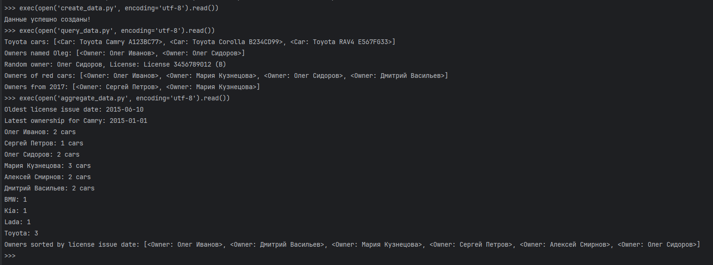
Выполнение лабораторной работы¶
Для начала написал БД: models.py
from decimal import Decimal
from django.db import models
from django.core.validators import MinValueValidator
class BusType(models.Model):
name = models.CharField(max_length=100, unique=True)
capacity = models.PositiveIntegerField(validators=[MinValueValidator(1)])
def __str__(self):
return self.name
class Bus(models.Model):
registration_number = models.CharField(max_length=20, unique=True)
bus_type = models.ForeignKey(BusType, on_delete=models.PROTECT)
is_active = models.BooleanField(default=True)
def __str__(self):
return self.registration_number
class Route(models.Model):
number = models.CharField(max_length=20, unique=True)
start_point = models.CharField(max_length=200)
end_point = models.CharField(max_length=200)
start_time = models.TimeField()
end_time = models.TimeField()
interval_minutes = models.PositiveIntegerField()
duration_minutes = models.PositiveIntegerField()
def __str__(self):
return f"{self.number}: {self.start_point} – {self.end_point}"
class DriverClass(models.Model):
name = models.CharField(max_length=50, unique=True)
base_salary = models.DecimalField(max_digits=10, decimal_places=2)
def __str__(self):
return self.name
class Driver(models.Model):
first_name = models.CharField(max_length=100)
last_name = models.CharField(max_length=100)
passport_number = models.CharField(max_length=20, unique=True)
birth_date = models.DateField()
driver_class = models.ForeignKey(DriverClass, on_delete=models.PROTECT)
experience_years = models.PositiveIntegerField()
def __str__(self):
return f"{self.last_name} {self.first_name}"
@property
def salary(self):
return self.driver_class.base_salary * (1 + self.experience_years * Decimal(0.05))
class WorkShift(models.Model):
driver = models.ForeignKey(Driver, on_delete=models.CASCADE)
bus = models.ForeignKey(Bus, on_delete=models.PROTECT)
route = models.ForeignKey(Route, on_delete=models.PROTECT)
date = models.DateField()
start_time = models.TimeField()
end_time = models.TimeField()
absence_reason = models.CharField(
max_length=200,
blank=True,
null=True,
help_text="Причина, если автобус не вышел на линию",
)
class Meta:
unique_together = ("driver", "date", "start_time")
def __str__(self):
return f"{self.driver} – {self.route} ({self.date})"
Затем написал serializers.py для сериализации:
from rest_framework import serializers
from .models import (
DriverClass, Driver,
BusType, Bus,
Route, WorkShift
)
# Класс водителя
class DriverClassSerializer(serializers.ModelSerializer):
class Meta:
model = DriverClass
fields = '__all__'
# Водители
class DriverSerializer(serializers.ModelSerializer):
driver_class = DriverClassSerializer(read_only=True)
driver_class_id = serializers.PrimaryKeyRelatedField(
queryset=DriverClass.objects.all(),
source='driver_class',
write_only=True
)
salary = serializers.DecimalField(
max_digits=10,
decimal_places=2,
read_only=True
)
class Meta:
model = Driver
fields = (
'id',
'first_name',
'last_name',
'passport_number',
'birth_date',
'experience_years',
'driver_class',
'driver_class_id',
'salary'
)
# Типы автобусов
class BusTypeSerializer(serializers.ModelSerializer):
class Meta:
model = BusType
fields = '__all__'
# Автобусы
class BusSerializer(serializers.ModelSerializer):
bus_type = BusTypeSerializer(read_only=True)
bus_type_id = serializers.PrimaryKeyRelatedField(
queryset=BusType.objects.all(),
source='bus_type',
write_only=True
)
class Meta:
model = Bus
fields = (
'id',
'registration_number',
'is_active',
'bus_type',
'bus_type_id'
)
# Маршрут
class RouteSerializer(serializers.ModelSerializer):
class Meta:
model = Route
fields = '__all__'
# Рабочая сменя
class WorkShiftSerializer(serializers.ModelSerializer):
driver = DriverSerializer(read_only=True)
bus = BusSerializer(read_only=True)
route = RouteSerializer(read_only=True)
driver_id = serializers.PrimaryKeyRelatedField(
queryset=Driver.objects.all(),
source='driver',
write_only=True
)
bus_id = serializers.PrimaryKeyRelatedField(
queryset=Bus.objects.all(),
source='bus',
write_only=True
)
route_id = serializers.PrimaryKeyRelatedField(
queryset=Route.objects.all(),
source='route',
write_only=True
)
class Meta:
model = WorkShift
fields = (
'id',
'date',
'start_time',
'end_time',
'absence_reason',
'driver',
'driver_id',
'bus',
'bus_id',
'route',
'route_id'
)
Далее были написаны представления: views.py
from rest_framework.viewsets import ModelViewSet
from rest_framework.decorators import action
from rest_framework.response import Response
from django.utils.dateparse import parse_date
from django.db.models import Count, Sum, Avg
from .models import DriverClass, Driver, BusType, Bus, Route, WorkShift
from .serializers import (
DriverClassSerializer, DriverSerializer,
BusTypeSerializer, BusSerializer,
RouteSerializer, WorkShiftSerializer
)
# Классы водителей
class DriverClassViewSet(ModelViewSet):
queryset = DriverClass.objects.all()
serializer_class = DriverClassSerializer
@action(detail=False, methods=['get'])
def statistics(self, request):
"""
Количество водителей по классам
"""
stats = Driver.objects.values('driver_class__name').annotate(total=Count('id'))
return Response(stats)
# Водители
class DriverViewSet(ModelViewSet):
queryset = Driver.objects.select_related('driver_class')
serializer_class = DriverSerializer
# Типы автобусов
class BusTypeViewSet(ModelViewSet):
queryset = BusType.objects.all()
serializer_class = BusTypeSerializer
@action(detail=False, methods=['get'])
def report(self, request):
"""
Отчет по автопарку, сгруппированный по типам автобусов
"""
report = []
for bus_type in BusType.objects.all():
buses = Bus.objects.filter(bus_type=bus_type)
routes = Route.objects.filter(workshift__bus__in=buses).distinct()
drivers = Driver.objects.filter(workshift__bus__in=buses).distinct()
report.append({
"bus_type": bus_type.name,
"bus_count": buses.count(),
"routes": RouteSerializer(routes, many=True).data,
"drivers": DriverSerializer(drivers, many=True).data,
"total_route_duration": routes.aggregate(total=Sum('duration_minutes'))['total'],
"drivers_avg_experience": drivers.aggregate(avg=Avg('experience_years'))['avg'],
})
return Response(report)
# Автобусы
class BusViewSet(ModelViewSet):
queryset = Bus.objects.select_related('bus_type')
serializer_class = BusSerializer
# Маршруты
class RouteViewSet(ModelViewSet):
queryset = Route.objects.all()
serializer_class = RouteSerializer
@action(detail=True, methods=['get'])
def drivers_schedule(self, request, pk=None):
"""
Список водителей на маршруте с графиком работы
"""
shifts = WorkShift.objects.filter(route_id=pk).select_related('driver')
return Response([
{
"driver": f"{s.driver.last_name} {s.driver.first_name}",
"date": s.date,
"start_time": s.start_time,
"end_time": s.end_time
} for s in shifts
])
@action(detail=True, methods=['get'])
def schedule(self, request, pk=None):
"""
Время начала и окончания конкретного маршрута
"""
try:
route = Route.objects.get(pk=pk)
except Route.DoesNotExist:
return Response({"error": "Маршрут не найден"}, status=404)
return Response({
"route": route.number,
"start_time": route.start_time,
"end_time": route.end_time
})
@action(detail=False, methods=['get'])
def total_duration(self, request):
"""
Общая протяженность всех маршрутов
"""
total = Route.objects.aggregate(total_minutes=Sum('duration_minutes'))['total_minutes']
return Response({"total_duration_minutes": total})
# График работы водителей (смены)
class WorkShiftViewSet(ModelViewSet):
queryset = WorkShift.objects.select_related('driver', 'bus', 'route')
serializer_class = WorkShiftSerializer
@action(detail=False, methods=['get'])
def missed(self, request):
"""
Автобусы, не вышедшие на линию в заданный день
"""
date_str = request.query_params.get('date')
if not date_str:
return Response({"error": "Укажите date=YYYY-MM-DD"}, status=400)
date = parse_date(date_str)
shifts = WorkShift.objects.filter(date=date, absence_reason__isnull=False).select_related('bus')
return Response([
{"bus": s.bus.registration_number, "reason": s.absence_reason} for s in shifts
])
Был использован декоратор @action, чтобы проще создавать кастомные эндпоинты
Затем были созданы пути urls.py:
from django.urls import path, include
from rest_framework.routers import DefaultRouter
from rest_framework_simplejwt.views import TokenObtainPairView, TokenRefreshView
from .views import (
DriverClassViewSet,
DriverViewSet,
BusTypeViewSet,
BusViewSet,
RouteViewSet,
WorkShiftViewSet,
)
router = DefaultRouter()
router.register(r'driverclasses', DriverClassViewSet, basename='driverclass')
router.register(r'drivers', DriverViewSet, basename='driver')
router.register(r'bus-types', BusTypeViewSet, basename='bus-type')
router.register(r'buses', BusViewSet, basename='bus')
router.register(r'routes', RouteViewSet, basename='route')
router.register(r'workshifts', WorkShiftViewSet, basename='workshift')
urlpatterns = [
path('token/', TokenObtainPairView.as_view(), name='token_obtain_pair'),
path('token/refresh/', TokenRefreshView.as_view(), name='token_refresh'),
path('auth/', include('djoser.urls')),
path('auth/', include('djoser.urls.jwt')),
path('', include(router.urls)),
]
После всего я прикрутил djoser с JWT авторизацией в settings.py:
REST_FRAMEWORK = {
'DEFAULT_AUTHENTICATION_CLASSES': (
'rest_framework_simplejwt.authentication.JWTAuthentication',
'rest_framework.authentication.SessionAuthentication'
),
'DEFAULT_PERMISSION_CLASSES': (
'rest_framework.permissions.IsAuthenticated',
),
}
SIMPLE_JWT = {
'ACCESS_TOKEN_LIFETIME': timedelta(minutes=15),
'REFRESH_TOKEN_LIFETIME': timedelta(days=1),
'AUTH_HEADER_TYPES': ('Bearer',),
}
и добавил в urls.py
urlpatterns = [
path('token/', TokenObtainPairView.as_view(), name='token_obtain_pair'),
path('token/refresh/', TokenRefreshView.as_view(), name='token_refresh'),
path('auth/', include('djoser.urls')),
path('auth/', include('djoser.urls.jwt')),
path('', include(router.urls)),
]
После этого пришло время запускаться:
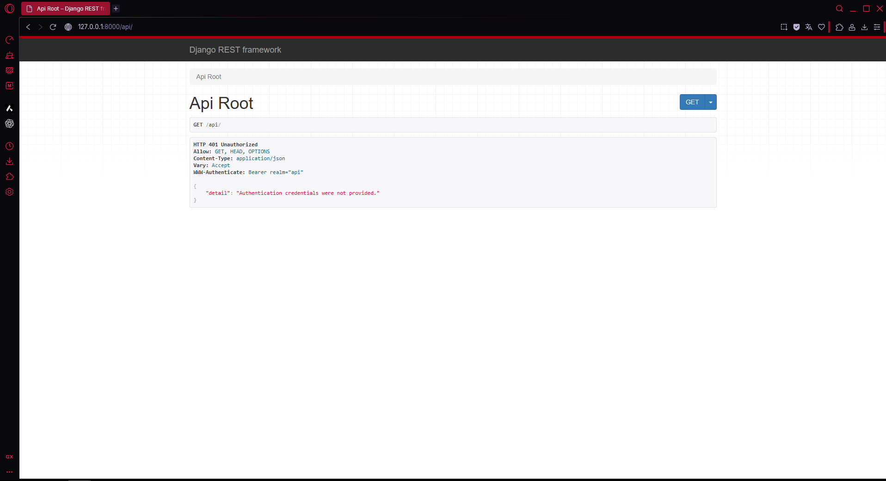
Изначально появилась 401 ошибка: я забыл создать суперюзера, но это показало, что токены авторизации работают
После добавления суперюзера, я получил JWT токен

Далее я проверил все кастомные эндпоинты и несколько обычных:
Водители (Drivers)¶
| Метод | URL | Описание |
|---|---|---|
| GET | /api/drivers/ |
Получить список всех водителей |
| POST | /api/drivers/ |
Создать нового водителя |
| GET | /api/drivers/<id>/ |
Получить данные конкретного водителя |
| PUT | /api/drivers/<id>/ |
Полностью обновить данные водителя |
| PATCH | /api/drivers/<id>/ |
Частично обновить данные водителя |
| DELETE | /api/drivers/<id>/ |
Удалить водителя |

Классы водителей (Driver Classes)¶
| Метод | URL | Описание |
|---|---|---|
| GET | /api/driverclasses/ |
Получить список всех классов водителей |
| POST | /api/driverclasses/ |
Создать новый класс водителей |
| GET | /api/driverclasses/<id>/ |
Получить данные конкретного класса водителей |
| GET | /api/driverclasses/statistics/ |
Количество водителей в каждом классе |
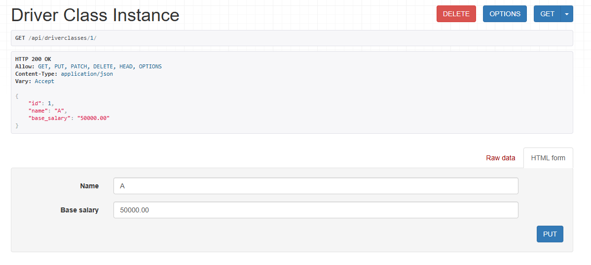 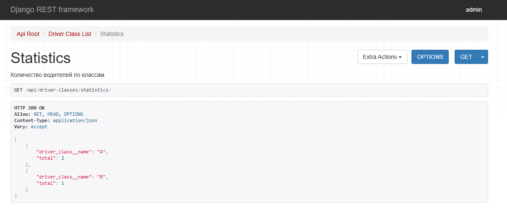
Типы автобусов (Bus Types)¶
| Метод | URL | Описание |
|---|---|---|
| GET | /api/bustypes/ |
Получить список всех типов автобусов |
| POST | /api/bustypes/ |
Создать новый тип автобуса |
| GET | /api/bustypes/<id>/ |
Получить данные конкретного типа автобуса |
| GET | /api/bustypes/report/ |
Отчёт по автопарку, сгруппированный по типам автобусов, с информацией о маршрутах, водителях, суммарной протяжённости маршрутов и среднем стаже водителей |
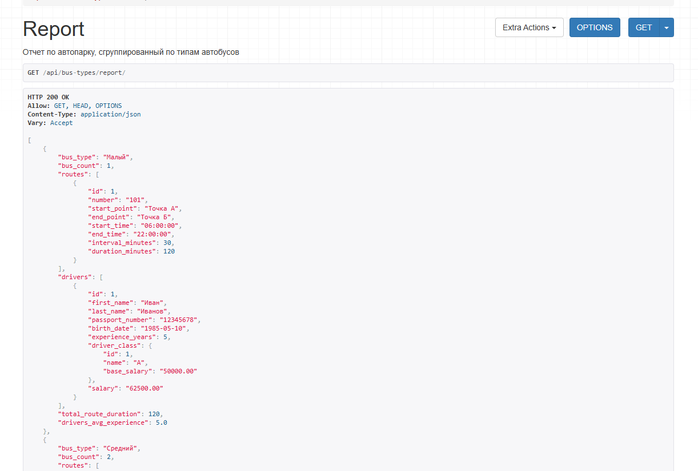
Автобусы (Buses)¶
| Метод | URL | Описание |
|---|---|---|
| GET | /api/buses/ |
Получить список всех автобусов |
| POST | /api/buses/ |
Создать новый автобус |
| GET | /api/buses/<id>/ |
Получить данные конкретного автобуса |

Маршруты (Routes)¶
| Метод | URL | Описание |
|---|---|---|
| GET | /api/routes/ |
Получить список всех маршрутов |
| POST | /api/routes/ |
Создать новый маршрут |
| GET | /api/routes/<id>/ |
Получить данные конкретного маршрута |
| GET | /api/routes/<id>/drivers_schedule/ |
Список водителей, работающих на маршруте, с графиком работы |
| GET | /api/routes/<id>/schedule/ |
Время начала и окончания движения автобусов на конкретном маршруте |
| GET | /api/routes/total_duration/ |
Общая протяжённость всех маршрутов |
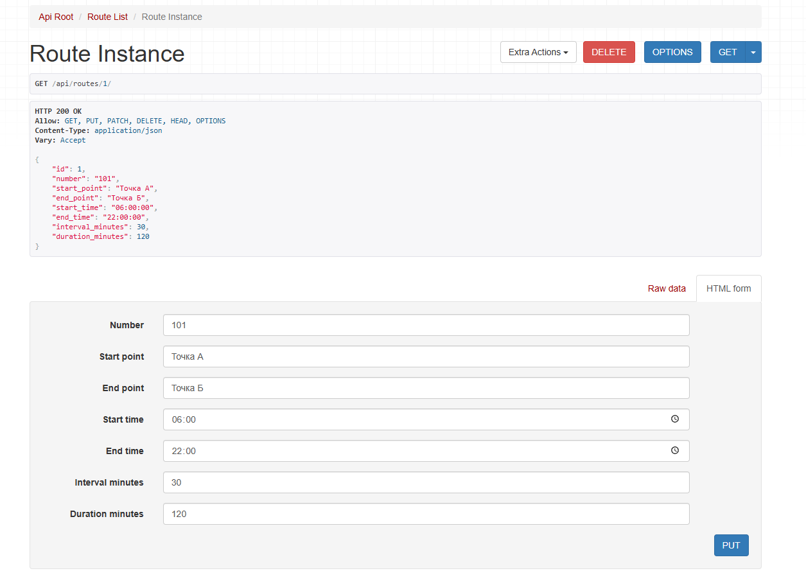
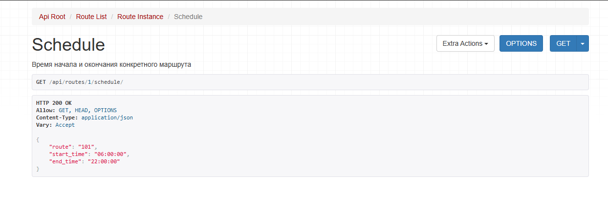
 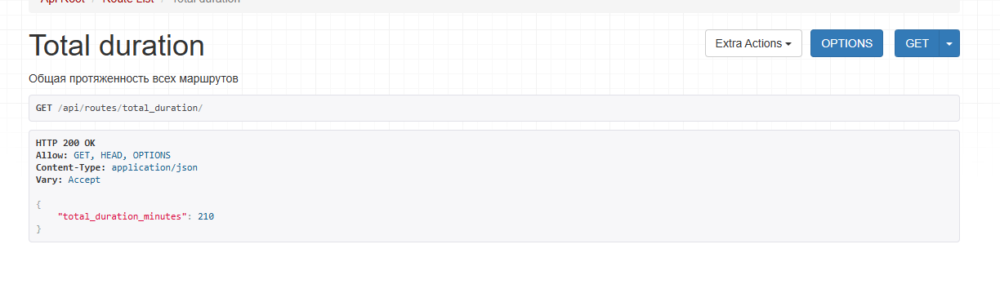
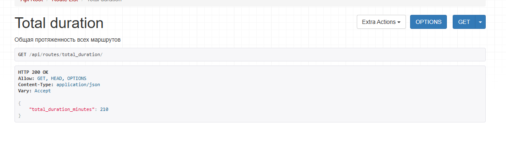
Смены водителей (Work Shifts)¶
| Метод | URL | Описание |
|---|---|---|
| GET | /api/workshifts/ |
Получить список всех смен водителей |
| POST | /api/workshifts/ |
Создать новую смену |
| GET | /api/workshifts/<id>/ |
Получить данные конкретной смены |
| GET | /api/workshifts/missed/?date=YYYY-MM-DD |
Автобусы, не вышедшие на линию в указанный день, с указанием причины отсутствия |
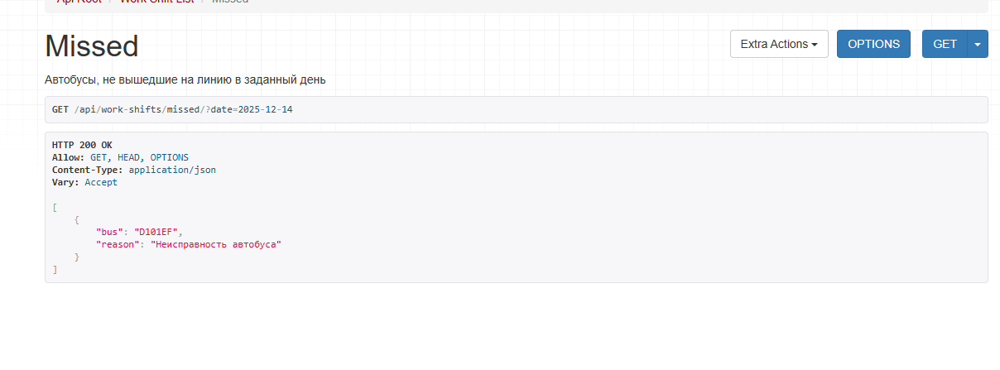
Долг по литкоду¶
- Remove Duplicates from Sorted Array (https://leetcode.com/explore/interview/card/top-interview-questions-easy/92/array/727/)
class Solution {
public int removeDuplicates(int[] nums) {
if (nums.length == 0)
return 0;
int lastUnique = 0;
for (int i = 1; i < nums.length; i++) {
if (nums[i] != nums[lastUnique]) {
lastUnique++;
nums[lastUnique] = nums[i];
}
}
return lastUnique + 1;
}
}
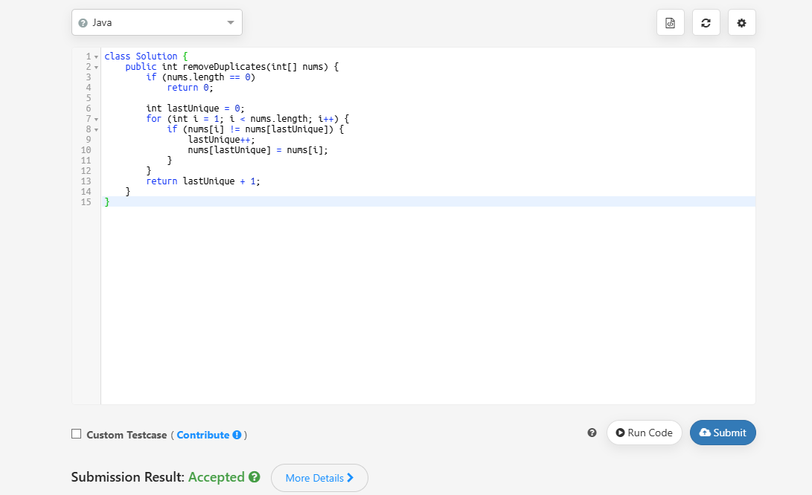
- Reverse String (https://leetcode.com/explore/interview/card/top-interview-questions-easy/127/strings/879/)
class Solution {
public void reverseString(char[] s) {
for (int i = 0; i < s.length/2; i++) {
int j = s.length-1-i;
char temp = s[i];
s[i] = s[j];
s[j] = temp;
}
}
}
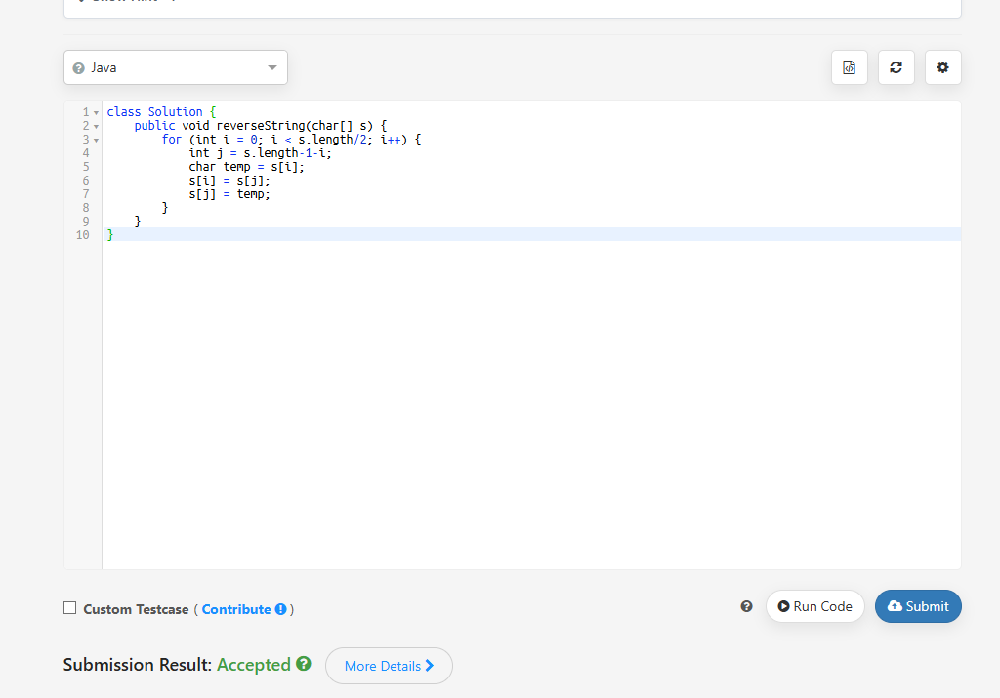